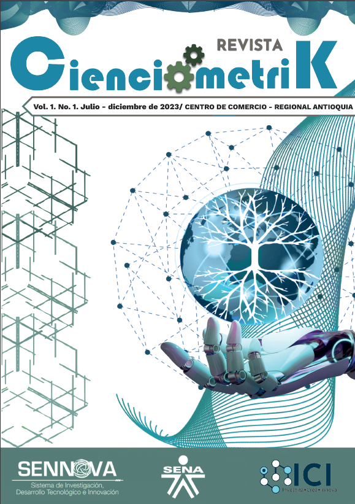

Volúmenes Publicados
Vol. 2 N°. 3 (2024) - Herramientas de Cienciometría
Este número incluye artículos relacionados con la aplicación de la IA en el entorno empresarial, agro sostenible y nuevas tecnologías.
Descargar PDF
Vol. 2 N°. 2 (2024) - Inteligencia Artificial
Este número presenta proyectos que enfatizan en el uso de la inteligencia artificial y modelos productivos innovadores.
Descargar PDF
Vol. 1 N°. 1 (2023) - Pósters de Investigación
Primer número de la revista, con una colección de pósters que presentan resultados de investigación de los semilleros del SENA.
Descargar PDF
